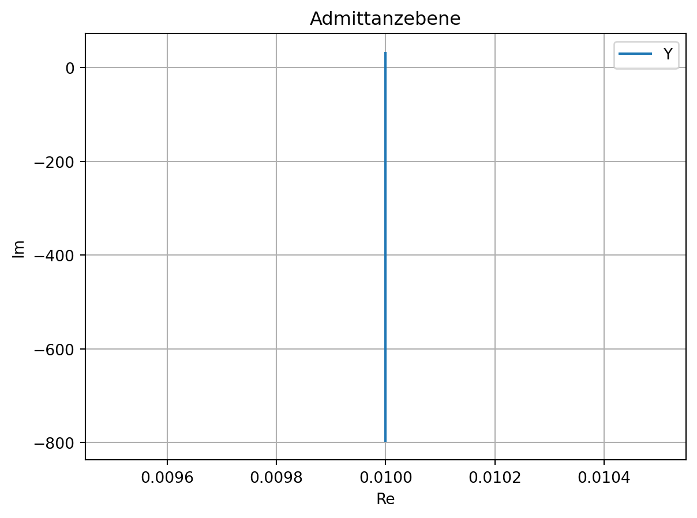
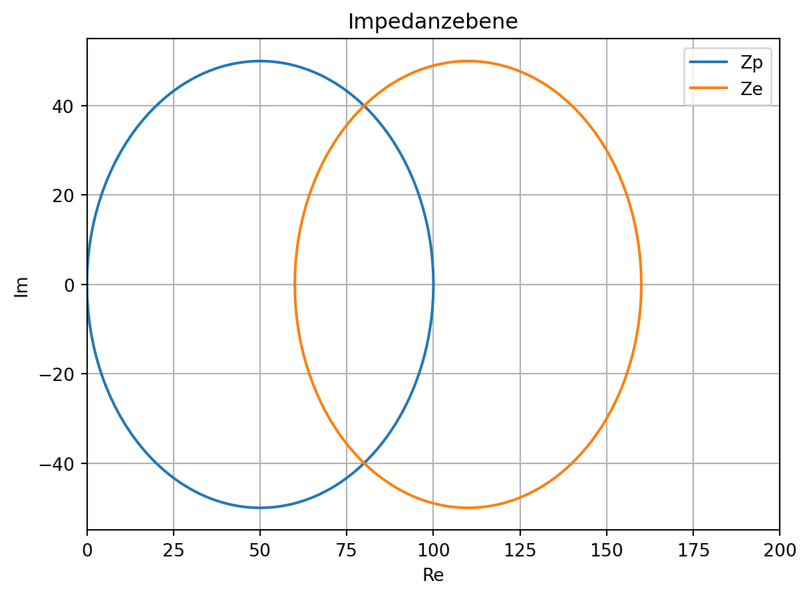

Im Labor ist mit einem Vektornetzwerkanalysator das Bode-Diagramm eines Zweitors aufgenommen worden. In Abbildung 12.1 sind Betrag \(\vert H_u \vert\) und Phase \(\arg(H_u)\) der Spannungsübertragungsfunktion von Tor 1 auf Tor 2, \(\underline{H}_u=\underline{U}_2/\underline{U}_1\), abgebildet.
Abbildung 12.1: Bode-Diagramm des Zweitors
12.1.1 Funktion
Welche Funktion erfüllt das gemessene Zweitor?
12.1.1.1 Lösung
Das gemessene Zweitor hat die Funktion eines Hochpassfilters.
12.1.2 Bauteilanordnung
Welche Bauteilanordnung vermuten Sie zwischen den zwei Toren? Zeichnen Sie ein Ersatzschaltbild des Zweitors mit Eingangsspannung \(\underline{U}_1\) und Ausgangsspannung \(\underline{U}_2\).
12.1.2.1 Lösung
In einfachster Ausführung kann man einen Hochpass durch einen Spannungsteiler mit Kapazität \(C\) und Widerstand \(R\) realisieren.
Leiten Sie die Spannungsübertragungsfunktion, \(\underline{H}_u=\underline{U}_2/\underline{U}_1\), Ihres Ersatzschaltbildes her.
12.1.3.1 Lösung
\[
\underline{H}_u=\frac{\underline{U}_2}{\underline{U}_1} = \frac{j \omega R C}{1+j \omega R C}
\]
12.1.4 Betrag und Phase
Bestimmen Sie Betrag und Phase der Spannungsübertragungsfunktion \(\underline{H}_u\).
12.1.4.1 Lösung
\[
\vert\underline{H}_u\vert =\frac{\omega R C}{\sqrt{1 + (\omega R C)^2}}
\]
\[
\varphi(\underline{H}_u) = \arg(\underline{H}_u)
= \arg \left(\frac{j \omega R C}{1+j\omega R C}\right)
= \arg \left(
\underbrace{\frac{(\omega R C)^2}{1+(\omega R C)^2}}_{\operatorname{Re}}
+ j \underbrace{\frac{\omega R C}{1 + (\omega R C)^2}}_{\operatorname{Im}}
\right)
= \arctan\left(\frac{1}{\omega R C}\right)
\]
12.1.5 3 dB-Grenzfrequenz
Leiten Sie eine Bestimmungsgleichung für die 3 dB-Grenzfrequenz \(f_g\) der Spannungsübertragungsfunktion her.
Hinweis
Die Grenzfrequenz kennzeichnet die Frequenz, bei der der Betrag auf -3 dB abfällt und die Phase 45 Grad beträgt.
12.1.5.1 Lösung
Es gibt zwei Lösungswege:
\[
\vert H_u \vert = -3\,dB = \frac{1}{\sqrt{2}}_{lin} = \frac{\omega_g R C}{\sqrt{1+(\omega_g R C)^2}}
\arg(H_u) = \frac{\pi}{4} = \arctan\left(\frac{1}{\omega_g R C}\right)
\]
\[
\Rightarrow f_g = \frac{1}{2 \pi R C} \Rightarrow f_g = \frac{1}{2 \pi R C}
\]
Alternativ auch der Ansatz aus der Elektronik-Fibel:
\[
R = X_C
\]
\[
R = \frac{1}{\omega_g C}
\]
\[
R = \frac{1}{2 \pi f_g C}
\]
\[
\Rightarrow f_g = \frac{1}{2 \pi R C}
\]
12.1.6 Grenzfrequenz
Wie groß ist die Grenzfrequenz für \(R=1\,k\Omega\) und \(C=100\,nF\)?
12.1.6.1 Lösung
\[
\omega_g = \frac{1}{R C} = 10\,kHz
\]
\[
f_g = \frac{1}{2 \pi R C} \approx 1.6\,kHz
\]
12.2 Ortskurve einer Zweipol-Admittanz
Konstruieren Sie eine Ortskurve der Admittanz \(Y(\omega)\) für den skizzierten Zweipol in Abbildung 12.3. Überprüfen Sie das Ergebnis, indem Sie ausgezeichnete Frequenzwerte betrachten. Die Werte der Bauteile lauten \(R_s = 50\,\Omega\), \(R_p = 200\,\Omega\) und \(C = 2\,\mu F\).
Abbildung 12.3: Zweipol-Admittanz
12.3 Ortskurve mit verschiedenen Parametern
Gegeben sei nachfolgende RLC-Schaltung in Abbildung 12.4. Die Werte der Bauteile lauten \(R_1 = 60\,\Omega\), \(R_2 = 200\,\Omega\), \(L = 200\,\mu H\) und \(C = 5\,nF\).
Abbildung 12.4: RLC-Schaltung
12.3.1 Ortskurve mit \(\omega\) als Parameter
\(f(\omega)\) Konstruieren Sie die Ortskurve der Eingangsimpedanz \(\underline{Z}_e\) mit der Kreisfrequenz \(\omega\) als Parameter, \(0 \leq \omega \leq \infty\). Dabei sei der Widerstand \(R = 200\,\Omega\).
# %% Import der Bibliothekenimport numpy as npimport matplotlib.pylab as plt# %% Definition der VariablenR =200.0R1 =60.0R2 =200.0L =200e-6C =5e-9f = np.logspace(0, 9, 1000)w =2* np.pi * f# %% Definition der Impedanzen/AdmittanzenYp =1/ R +1/ R2 +1/ (1j* w * L) +1j* w * CZp =1/ YpZe = Zp + R1# %% Ortskurven plottenfig1 = plt.figure(1)plt.title('Admittanzebene')plt.plot(np.real(Yp), np.imag(Yp))plt.xlabel('Re')plt.ylabel('Im')plt.legend(('Yp'))plt.grid()plt.show()fig2 = plt.figure(2)plt.title('Impedanzebene')plt.plot(np.real(Zp), np.imag(Zp), np.real(Ze), np.imag(Ze))plt.xlabel('Re')plt.ylabel('Im')plt.axis([0, 200, -55, 55])plt.legend(('Zp', 'Ze'))plt.grid()plt.show()

(a) Ortskurve

(b)
Abbildung 12.5
12.3.2 Ortskurve mit R als Parameter
Konstruieren Sie die Ortskurve der Eingangsimpedanz \(\underline{Z}_e\) mit dem Widerstand R als Parameter, \(0 \leq R \leq \infty\). Dabei sei die Kreisfrequenz \(\omega = 1.5e6 1/s\).
\(R_3\) ist Funktion von \(R\), \(R_3=R_3(R)\), mit \(R=0 \Rightarrow R_3 = 0\) und \(R \rightarrow \infty \Rightarrow R_3
\rightarrow R_2 = 200\,\Omega\)
\(\underline{Y}_p(R_3)\) zeichnen: Teil einer horizontalen Geraden in der komplexen Ebene \(0 \leq R_3 \leq
200\,\Omega\) bzw. \(5\,mS \leq \frac{1}{R_3} \leq \infty\)
Ortskurve invertieren, dazu
die gesamte Gerade invertieren \(\rightarrow\) Kreis
Anfangspunkt von \(\underline{Y}_p\) invertieren
\(\Rightarrow \underline{Z}_p\) ist ein Kreisabschnitt.